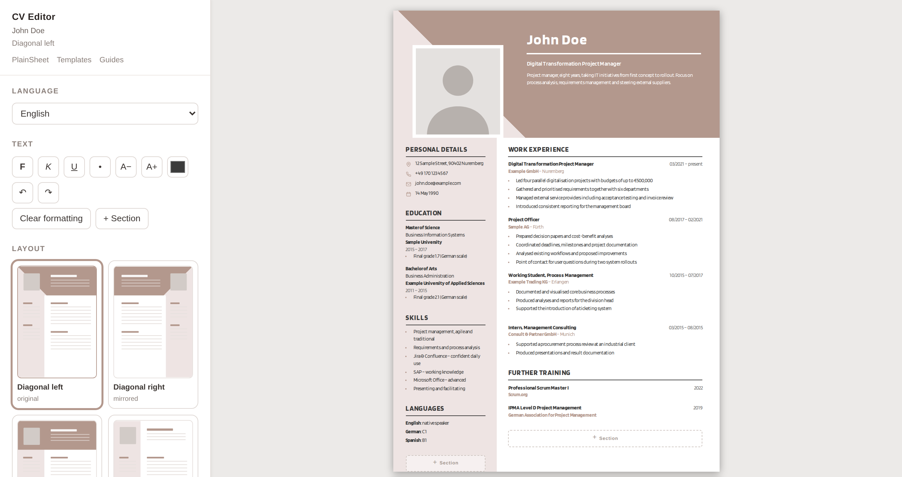

Build your resume in your browser. Free.
Type into a live A4 page, pick one of sixteen layouts, and save the PDF. No account, no watermark, and nothing you write is uploaded anywhere.
Free · no sign-up · works on any browser

The PDF is free at the end, not after a trial. There is no download button to put a price behind.
The editor runs on your machine: what you type, the layout and the PDF stay there. The three AI features are the exception, and they ask before the first time.
Switch the design whenever you like. What you wrote stays where it is.
Pick a layout
Each one is a finished A4 document. Single column parses most reliably through employer portals; a sidebar reads better when a person opens the PDF.
See a finished one
A worked resume for eight occupations, with the reasoning: what the person hiring checks first, and which lines are worth their space.
Software developer
Engineering resumes are read by engineers, who skim for the stack and then look for evidence that you have shipped something to real users.
7 min readHealthcareNurse
A nursing resume is read for facts before it is read for prose: registration, setting, caseload, and whether you have worked the kind of ward doing the hiring.
7 min readBusinessProject manager
Project management resumes fail in a specific way: they describe the methodology and leave out the project.
7 min readWhat to write on it
The editor handles the layout. These handle the words, which is the part that decides whether anyone calls you.
How to write a resume
Most resume advice is either a list of adjectives or a sales page.
12 min readGetting readHow applicant tracking systems actually read your resume
Applicant tracking software is blamed for a lot of rejections it had nothing to do with.
9 min readWriting itWriting work experience bullet points
The bullet points under your current job are the only part of a resume that most readers read properly.
8 min readQuestions
Is it really free?
Yes. The export is your browser printing to PDF, so there is nothing for us to charge for and no watermark to remove. Advertising on the pages around the editor pays for the site.
Do I need an account?
No. There is no sign-up because there is no server storing anything. Use Save file to keep a copy on your own machine and open it again later.
Will it get through an applicant tracking system?
Single-column layouts such as Plainfield and Linden parse most reliably. Sidebar layouts look better to a human but can confuse parsers that read across columns.
Where is my data?
In your browser, on your device. The editor keeps a working draft locally so a closed tab does not lose your work, and that draft never leaves the machine.
Can I get a Word file?
Yes, though Word receives a simplified table version. Diagonals and round photos are beyond what Word draws reliably.
Now put it on a page
The editor opens with a filled-in example. Replace the text, pick a layout, print to PDF. Nothing costs anything, and nothing leaves your device unless you ask the AI to read it.